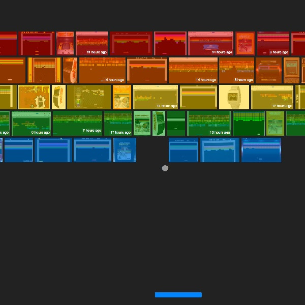
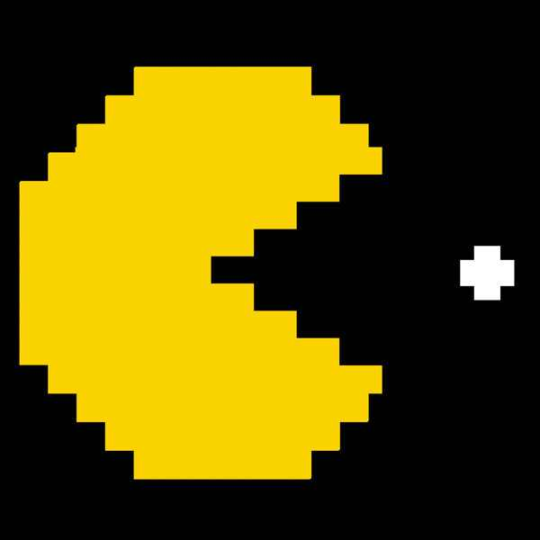

Aqui voce pode fazer download de alguns arquivos relacionados ao Atari, tais como emuladores, jogos e wallpapers
 
Emulador Atari (Download)
Pack de jogos (Download)
Emulador + Pack de jogos (Download)
Wallpapers Atari (Download)